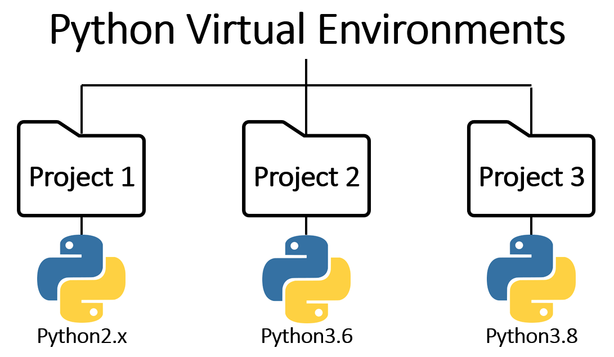

Entornos virtuales
Este capítulo describe las principales herramientas para la gestión de entornos
virtuales y de dependencias en Python, compara sus ventajas y limitaciones, y desarrolla
con detalle el uso de uv, que es la alternativa recomendada en el resto de la wiki.
Recorre la creación del entorno, la estructura del archivo pyproject.toml, las
operaciones habituales de mantenimiento y, por último, la construcción y publicación de
un paquete propio.
Bibliografía¶
- Python Software Foundation. (s.f.). venv — Creation of virtual environments. https://docs.python.org/3/library/venv.html
- Poetry. (s.f.). Poetry - Python dependency management and packaging. https://python-poetry.org/
- Anaconda. (s.f.). Anaconda Documentation. https://docs.anaconda.com/
- Astral. (s.f.). uv - An extremely fast Python package and project manager. https://docs.astral.sh/uv/
- Astral. (s.f.). Building and publishing a package. https://docs.astral.sh/uv/guides/package/#publishing-your-package
Gestores de entornos y paquetes¶
En el ecosistema de Python existen diversas herramientas para la gestión de paquetes y de entornos virtuales. La elección de una u otra depende del contexto de trabajo, de las necesidades del equipo y de la infraestructura disponible. Como principio general resulta conveniente optar por la alternativa más simple y minimalista posible. Un entorno con pocas dependencias es más fácil de llevar a producción, por ejemplo dentro de una imagen de Docker. También resulta más sencillo de compartir con otras personas y de mantener a lo largo del tiempo.
Anaconda¶
Anaconda es una plataforma para la creación y gestión de entornos virtuales, orientada a proyectos de ciencia de datos y aprendizaje automático. Proporciona una distribución de Python con numerosas bibliotecas preinstaladas, un gestor de paquetes propio denominado conda y herramientas integradas como Jupyter.
La gestión de paquetes se realiza principalmente a través de conda, aunque también es posible recurrir a pip. Mezclar ambos gestores no es recomendable, ya que cada uno mantiene su propia visión del entorno y pueden surgir conflictos en la resolución de dependencias. Este artículo desarrolla el motivo con más detalle.
Durante años Anaconda fue la plataforma dominante en ciencia de datos gracias a su ecosistema completo y a su facilidad de uso. Con el tiempo, sin embargo, ha presentado limitaciones relevantes, como una licencia más restrictiva para entornos empresariales y un exceso de dependencias por defecto que incrementa de forma innecesaria el tamaño del entorno. Incluso con alternativas más contenidas como Miniconda, el conjunto sigue resultando pesado.
venv¶
venv es el módulo estándar de Python para la creación de entornos virtuales. A diferencia de Anaconda, no incluye dependencias adicionales y viene integrado en la instalación base del lenguaje. La gestión de paquetes se realiza mediante pip, el gestor por defecto del ecosistema.
Su principal ventaja es la simplicidad y la ausencia de herramientas externas, aunque carece de funcionalidades avanzadas como la organización de dependencias por grupos o la resolución determinista de versiones.
Poetry¶
Poetry es una herramienta de gestión de dependencias y de
empaquetado para proyectos de Python. Permite administrar dependencias organizadas por
grupos, por ejemplo producción, pruebas y documentación, lo que elimina la necesidad de
mantener múltiples archivos requirements.txt o de concentrar todas las dependencias en
un único archivo.
uv¶
uv es una de las herramientas más recientes y eficientes para la gestión de entornos virtuales y dependencias en Python. Su objetivo es unificar y acelerar tareas que tradicionalmente requieren varias herramientas distintas. Su velocidad es notablemente superior a la de las alternativas anteriores, en buena medida porque está implementada en Rust.
uv adopta un modelo de configuración basado en el archivo pyproject.toml, al igual que
Poetry y de forma análoga a Cargo en Rust. En ese archivo se definen los metadatos del
proyecto, las dependencias con sus versiones, la versión de Python requerida y la
configuración de las herramientas auxiliares. Además, gestiona el entorno de forma
automática y no exige que Python esté previamente instalado en el sistema, ya que se
encarga de descargar y configurar el intérprete de forma transparente.
Por todo ello, uv representa hoy la opción más recomendable para la mayoría de proyectos, y es la herramienta sobre la que se centra el resto del capítulo.
Creación y activación de entornos¶

Un entorno virtual genera una instancia aislada del intérprete de Python, de modo que las dependencias de un proyecto no interfieran con las bibliotecas globales del sistema ni con otros desarrollos simultáneos. Este aislamiento evita los conflictos de versiones entre proyectos y es el primer requisito para que el código sea reproducible, aunque la reproducibilidad completa exige además fijar las versiones instaladas.
El flujo de trabajo con uv se compone de dos fases. En primer lugar se instala la herramienta mediante un script que descarga y sitúa el binario en el sistema:
A continuación se inicializa el proyecto y se añaden sus dependencias:
No es necesario crear el entorno de forma explícita: uv add, uv sync y uv run lo
generan en el directorio .venv la primera vez que se invocan, respetando la versión de
Python declarada en el pyproject.toml.
uv add frente a uv pip install
Ambos comandos instalan paquetes, pero no son equivalentes. uv add registra la
dependencia en el pyproject.toml y actualiza el archivo uv.lock, de modo que el
estado del proyecto queda descrito y es reproducible por cualquier otra persona.
uv pip install se limita a modificar el entorno, igual que haría pip, sin dejar
constancia en el proyecto.
Por tanto, en un proyecto gestionado con pyproject.toml conviene emplear siempre
uv add. La interfaz uv pip queda reservada para entornos que no están
gestionados por un pyproject.toml, como la instalación puntual desde un
requirements.txt heredado.
Estructura de un pyproject.toml con uv¶
El archivo pyproject.toml constituye el punto central de configuración de un proyecto
de Python gestionado con uv. En él se definen los metadatos del proyecto, las
dependencias organizadas por grupos, los índices de paquetes y la configuración de las
herramientas auxiliares. Este enfoque centralizado elimina la necesidad de mantener
múltiples archivos de configuración dispersos por el repositorio.
Ejemplo de archivo pyproject.toml
A continuación se muestra un ejemplo completo con las secciones más relevantes.
La sección [build-system] define el backend de construcción del proyecto. Al
especificar uv_build se habilita el empaquetado como distribución instalable, lo
que permite publicar el proyecto como biblioteca y consumirlo igual que cualquier
dependencia de terceros como Polars o NumPy.
La sección [project] contiene los metadatos del proyecto: nombre, versión,
descripción, versión de Python requerida y autores. Este formato sigue el estándar
definido por PEP 621, que unifica la
declaración de metadatos en el ecosistema de Python.
La sección [tool.uv] alberga la configuración específica de uv. El campo
default-groups indica qué grupos de dependencias se instalan por defecto, mientras
que cache-keys permite invalidar la caché cuando cambian determinados archivos o
el commit de Git.
La sección [tool.uv.sources] permite definir fuentes alternativas para
paquetes concretos, como paquetes locales en modo editable, útiles durante el
desarrollo, o paquetes alojados en índices privados. Resulta especialmente práctica
cuando se gestionan bibliotecas propias en instancias privadas de GitLab o
plataformas similares.
La sección [[tool.uv.index]] configura los índices de paquetes disponibles. Es
posible definir varios de forma simultánea, estableciendo PyPI, el índice oficial de
paquetes de Python (Python Package Index), como índice por defecto y añadiendo
repositorios privados con autenticación obligatoria.
La sección [dependency-groups] organiza las dependencias en grupos lógicos, en
este caso core, notebooks, pipeline y docs. Esta organización permite
instalar únicamente lo necesario según el contexto. Por ejemplo, en un entorno de
integración continua bastaría con el grupo pipeline, mientras que en un entorno de
desarrollo local tendría sentido instalar todos los grupos.
Las secciones [tool.ruff], [tool.mypy] y [tool.pytest.ini_options]
centralizan la configuración de las herramientas del proyecto dentro del propio
pyproject.toml, lo que elimina la necesidad de archivos separados como
setup.cfg, .flake8, mypy.ini o pytest.ini.
Las herramientas de calidad del ejemplo
Las tres herramientas que el ejemplo configura aparecen ejecutadas en otros
capítulos de la wiki, de modo que conviene situarlas. Ruff es a la vez
formateador y analizador estático: reescribe el código conforme a un estilo uniforme
y señala errores e incumplimientos de las convenciones de PEP 8. mypy comprueba
que las anotaciones de tipo sean coherentes, sin ejecutar el programa. Y Pytest
descubre y ejecuta las pruebas del proyecto, con el criterio de nombres que fija
[tool.pytest.ini_options].
Las tres se invocan a través de uv run, lo que garantiza que se ejecuten dentro
del entorno del proyecto y con la versión fijada en el pyproject.toml.
Operaciones comunes de mantenimiento¶
A continuación se recogen las operaciones más habituales en el uso de uv. Para conocer
las opciones que admite cada comando, o para descubrir otros que no se mencionan aquí,
puede ejecutarse uv help, que muestra los comandos disponibles junto con una
descripción de cada uno.
Gestión de la caché¶
Los gestores de entorno almacenan en caché los archivos de los paquetes que descargan y las versiones ya construidas, con el fin de reutilizarlos en instalaciones posteriores. Con el tiempo esa caché puede ocupar una cantidad significativa de espacio en disco o provocar fallos cuando alguno de los archivos almacenados se corrompe. Para liberar espacio o descartar esa posibilidad al depurar un problema de dependencias, se purga con el siguiente comando:
Actualización de paquetes¶
El software evoluciona de forma continua. Los paquetes incorporan nuevas funcionalidades, corrigen errores y resuelven vulnerabilidades de seguridad en versiones posteriores, de modo que mantener las dependencias actualizadas es esencial para el correcto funcionamiento y la seguridad del proyecto.
Lo recomendable no es actualizar todos los paquetes de forma simultánea. Una estrategia más adecuada consiste en definir una batería de pruebas en el repositorio y apoyarse en herramientas como Dependabot en GitHub, o sus equivalentes en otras plataformas, que avisan cuando existe una versión nueva de una dependencia. Dependabot crea una rama con la versión nueva y abre una pull request, sobre la que el sistema de integración continua ejecuta las pruebas definidas en el repositorio. Si estas se superan, el cambio puede aprobarse. Este proceso es el que mejor se ajusta a las buenas prácticas, ya que una biblioteca puede arrastrar dependencias de otras que también se estén utilizando y provocar divergencias de versiones difíciles de anticipar.
Cuando se prefiere un proceso manual, siempre es posible consultar la página de PyPI o
el repositorio de la dependencia para comprobar si existe una versión nueva. Una vez
identificada, hay dos formas de aplicarla. La primera consiste en fijar la versión
deseada en el pyproject.toml y sincronizar el entorno. La segunda delega en uv la
resolución de la versión más reciente compatible con las restricciones ya declaradas:
Instalación de paquetes desde un archivo de requisitos¶
Aunque los proyectos basados en pyproject.toml hacen cada vez menos necesario el uso
de archivos requirements.txt, en determinados contextos sigue siendo útil, sobre todo
al trabajar con código heredado. El procedimiento consiste en crear un archivo con los
paquetes y las versiones deseadas e instalarlo mediante el gestor correspondiente.
Partiendo de un archivo requirements.txt que declara una versión exacta, una versión
mínima y una dependencia sin restricción:
La instalación de esas dependencias con uv se realiza mediante el siguiente comando:
Instalación de dependencias por grupos¶
La instalación de grupos concretos de dependencias, definidos en el apartado
[dependency-groups] del pyproject.toml tal como se mostró en el ejemplo de
configuración, se realiza con el comando uv sync:
Eliminación de un entorno¶
En la mayoría de los casos el entorno se aloja dentro del propio directorio del proyecto, de modo que para eliminarlo basta con borrar el directorio correspondiente. En GNU/Linux, en el subsistema de Windows para Linux (WSL) y en sistemas similares se emplea el siguiente comando:
Eliminación de paquetes¶
En un proyecto gestionado con uv y pyproject.toml, la forma recomendada de eliminar
una dependencia es el comando uv remove, que la retira del pyproject.toml, regenera
el archivo uv.lock y sincroniza el entorno en una sola operación:
Cuando se trabaja sobre un entorno no gestionado por un pyproject.toml, la
desinstalación se realiza con la interfaz compatible con pip:
Integración con Jupyter¶
Para utilizar un entorno virtual dentro de Jupyter es necesario instalar el paquete
ipykernel como dependencia del entorno:
El registro manual del entorno como kernel de Jupyter solo resulta necesario cuando el entorno virtual se encuentra en un directorio distinto al del proyecto. En los entornos de desarrollo modernos, como Visual Studio Code, un entorno que resida dentro del directorio del proyecto se detecta de forma automática y basta con seleccionar el kernel asociado.
Este es precisamente el comportamiento por defecto de uv, que crea el entorno en el
directorio .venv de la raíz del proyecto con la versión de Python declarada en el
pyproject.toml.
Construcción y publicación de paquetes¶
Además de gestionar entornos y dependencias, uv permite empaquetar un proyecto en distribuciones instalables y publicarlas en un índice de paquetes como PyPI. De esta forma una biblioteca propia queda disponible para el resto de la comunidad o para otros equipos, que podrán instalarla igual que cualquier dependencia de terceros.
El requisito previo es haber declarado la sección [build-system] en el
pyproject.toml, tal como se mostró en el ejemplo anterior, ya que es la que indica el
backend encargado de generar el paquete.
El flujo se resume en dos comandos. El primero, uv build, construye los artefactos de
distribución, esto es, el paquete de código fuente (source distribution) y el paquete
precompilado (wheel), y los deposita en el subdirectorio dist/. El segundo,
uv publish, los sube al índice configurado.
La autenticación en PyPI se realiza mediante un token, que se proporciona con la
opción --token o a través de la variable de entorno UV_PUBLISH_TOKEN. PyPI admite
además la publicación de confianza (Trusted Publishing), un mecanismo que autoriza a
un flujo concreto de integración continua a publicar sin credenciales permanentes. Al
publicar desde una plataforma compatible, como GitHub Actions, basta con registrar ese
flujo como publicador de confianza en el proyecto de PyPI.
Tratamiento de los tokens de publicación
Un token de PyPI concede permiso para publicar en nombre del proyecto, de modo que
debe tratarse como una credencial. Nunca debe escribirse en el pyproject.toml ni
en ningún otro archivo bajo control de versiones. Lo adecuado es inyectarlo como
variable de entorno o como secreto del sistema de integración continua.
Los detalles adicionales, como la actualización de versiones con uv version, la
publicación en índices personalizados o la configuración de la publicación de confianza,
se encuentran recogidos en la documentación oficial referenciada en la bibliografía.
Con el entorno ya preparado, el capítulo de fundamentos de Python recorre el lenguaje en sí, y el de librerías recopila paquetes de uso frecuente.